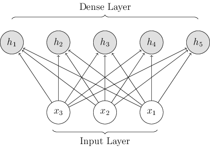

<link rel="import" href="../paper-material/paper-material.html">
<link rel="import" href="../paper-slider/paper-slider.html">
<link rel="import" href="../paper-spinner/paper-spinner-lite.html">
<link rel="import" href="../tf-imports/d3.html">
<link rel="import" href="../polymer/polymer.html">
<link rel="import" href="../iron-icons/iron-icons.html">

<dom-module id="explainer-wiki">
    <style>
    </style>
    <template>
      It works!
        
    </template>
</dom-module>

<script>
    "use strict";
    (function () {
        Polymer({
            is: 'explainer-wiki',
            properties: {
            },
            observers: [
            ],
            attached() {
            },
        })
        ;
    })();
</script>
